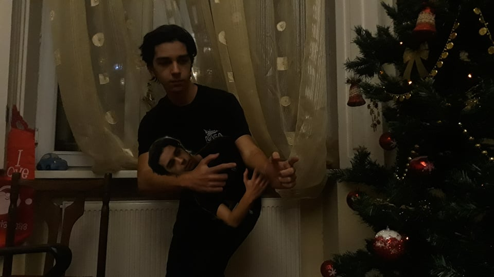

რეზის შეყვარებულებისახელი- "რეზი" და სიტყვა - " შეყვარებული ", საუბრისას, ერთად იშვიათად თუ გამოიყენება. რეზისა და გოგოების რომანტიულ ურთიერთიბაზე ბევრი უჩვეულო ლეგენდა დადის. მაგალითად, ერთერთი ლეგენდის თანახმად, რეზი თავს ე.წ "Sigma Male"-ად აღიქვამს. რის გამოც ის გოგოებთან რომანტიულ ურთიერთობაზე უარს ამბობს. როგორც ამ ბლოგის შემქნელი, რევაზ მართალი , ამის წერისას სიცილით ჩავიჯვი. რა თქმა უნდა რეზის სჭირდება შეყვარებული. მაგრამ რამდენიც არ უნდა ვესაუბრო, მისგან მხოლოდ უცნაური ფრაზები მესმის. მაგალითად: "I have to return some videotapes", "Hey Paul", "Duct tape. I need it for .. taping something". ჩემი მოსაზრებით, ეს ყველაფერი შიზოფრენიის ბრალია რაზეც ზოგჯერ თვითონაც საუბრობს. ხოლო მეორე მოსაზრებით, ის გამო*ლევდა. |
|  |
შიზოფრენიაჩვენ დროს თითქმის ყველამ იცის რომ რეზის შიზოფრენია ჭირს, მაგრამ ბევრმა არ იცის რისგამო, რანაირად და რატომ ჭირს ეს დაავადება. სიმართლე გითხრათ მეთვითონაც არ ვიცი, მაგრამ ამ დაბოლილ ნაბო**რს რომ დავუჯეროთ ყველაფერი იმის ბრალია რომ ზედმეტად ძლიერი არსებაა, უფრო სწორად რომ ავხსნათ რეზის ტანი და ტვინი ვერ უძლებდა იმ დონის დატვირსთვას რასაც იღებდა, ამიტომ თავისი ძალა დაყო სხვადასხვა personality-ში რომლიდანაც ყველაზე ძლიერი მე ვარ - რევაზ მართალი (უბრალოდ რეებს მაწერინებს ეს პიდარასტი) უფრო ვრცლად შევძლებთ რეზის შიზოფრენიაზე გაგებას როცა რეზოპედია გამოვა ამიტომ ჯერჯერობით მოგვიწევს ამ დეგენერატს დავუჯეროთ. |
| Hacking | ⭐⭐⭐⭐⭐ | Stealing | ⭐⭐⭐⭐⭐ |
| Stealing Your GF | ⭐⭐⭐⭐⭐ | Being ALPHA male | ⭐⭐⭐⭐⭐ |
| Muscles | ⭐⭐⭐⭐⭐ | Telling Truth | ⭐⭐⭐⭐⭐ |